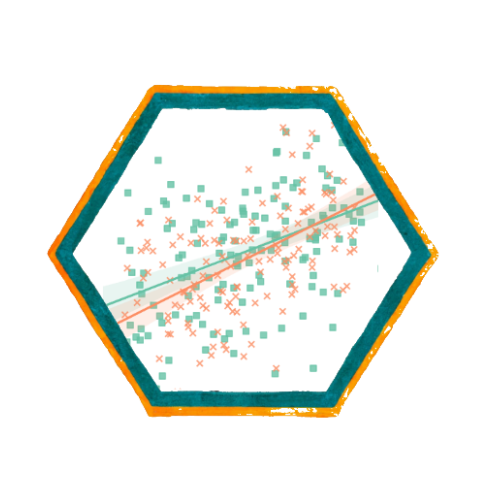
Métodos estadísticos para
Ciencias Sociales III
Kevin Carrasco
Sociología - UNAB
2do Sem 2026
https://metod3-unab.netlify.app/
Sesión 10
Supuestos de regresión
¿Dónde estamos?
Primera parte del curso: regresión lineal simple y múltiple, inferencia, ajuste, predictores categóricos
Segunda parte: regresión logística para dependientes dicotómicas
Hoy: volvemos a la regresión lineal para preguntarnos si el modelo es una buena representación de los datos
Estos diagnósticos son parte del trabajo final
Hoy
¿Por qué revisar los supuestos?
Casos influyentes
Linealidad
Homocedasticidad
Multicolinealidad
¿Por qué revisar los supuestos?
¿Qué tan apropiado es el modelo de regresión para dar cuenta de las relaciones entre los datos?
Cuatro bases de datos
| Datos 1 | Datos 2 | Datos 3 | Datos 4 | |||||
|---|---|---|---|---|---|---|---|---|
| Predictores | β | std. Error | β | std. Error | β | std. Error | β | std. Error |
| (Intercepto) | 3.00 * | 1.12 | 3.00 * | 1.13 | 3.00 * | 1.12 | 3.00 * | 1.12 |
| x | 0.50 ** | 0.12 | 0.50 ** | 0.12 | 0.50 ** | 0.12 | 0.50 ** | 0.12 |
| Observations | 11 | 11 | 11 | 11 | ||||
| R2 / R2 adjusted | 0.667 / 0.629 | 0.666 / 0.629 | 0.666 / 0.629 | 0.667 / 0.630 | ||||
| * p<0.05 ** p<0.01 *** p<0.001 | ||||||||
Cuatro regresiones con prácticamente el mismo intercepto, la misma pendiente, la misma significación y el mismo \(R^2\)
Los mismos resultados, pero …
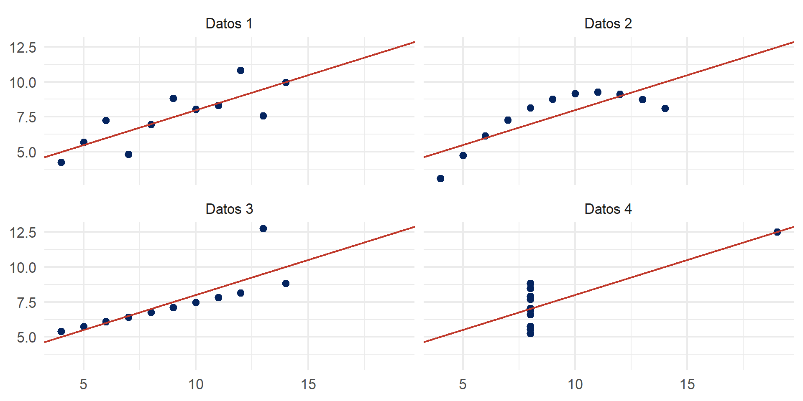
Figure 1
Anscombe, F. J. (1973). Graphs in Statistical Analysis. The American Statistician, 27(1), 17-21. https://doi.org/10.1080/00031305.1973.10478966
Robustez del modelo
El modelo de regresión está pensado para asociaciones lineales entre variables
Cuando los datos no cumplen ciertas condiciones, la estimación puede distorsionarse: los coeficientes, sus errores estándar o ambos
El análisis de robustez o diagnóstico de supuestos permite evaluar en qué medida el modelo es una representación adecuada de las asociaciones entre las variables
A revisar
Casos influyentes
Linealidad
Homogeneidad de varianza (homocedasticidad)
Multicolinealidad
El ejemplo de hoy
Pregunta: ¿qué características se asocian con la participación política no electoral?
Dependiente: índice de participación (0 a 16), que suma la frecuencia con que la persona firma peticiones, asiste a marchas, participa en huelgas y opina en redes sociales sobre temas públicos
Predictores: sexo, edad, nivel educacional, ingreso per cápita del hogar y posición política
Datos: ELSOC 2016, 2275 casos
El índice de participación
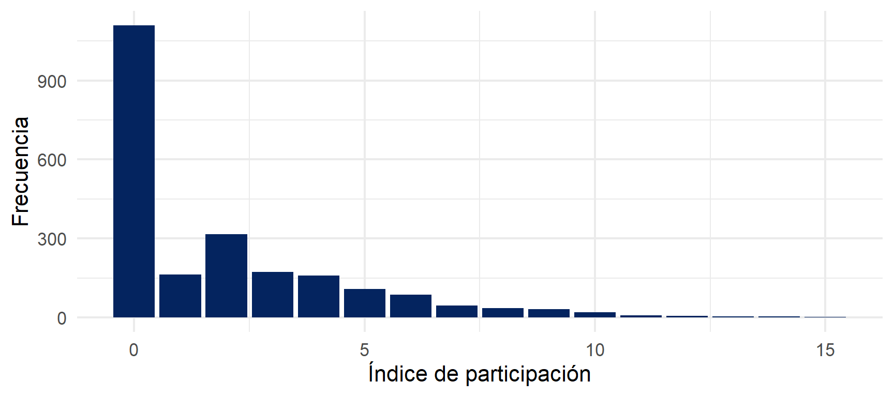
Figure 2
Un 49% de las personas nunca ha realizado ninguna de las cuatro acciones. Esta concentración en 0 tendrá consecuencias en el diagnóstico
Modelo 1
| Participación | |
|---|---|
| Predictores | β |
| (Intercepto) | 2.410 *** |
| Mujer | -0.076 |
| Edad | -0.032 *** |
| Educación media | 0.707 *** |
| Educación superior | 1.752 *** |
| Ingreso per cápita | 0.000 |
| Centro | 0.098 |
| Izquierda | 0.837 *** |
| Independiente / ninguna | -0.056 |
| Observations | 2275 |
| R2 / R2 adjusted | 0.155 / 0.152 |
| * p<0.05 ** p<0.01 *** p<0.001 | |
1. Casos influyentes
A revisar
Casos influyentes
Linealidad
Homogeneidad de varianza (homocedasticidad)
Multicolinealidad
Volviendo a Anscombe
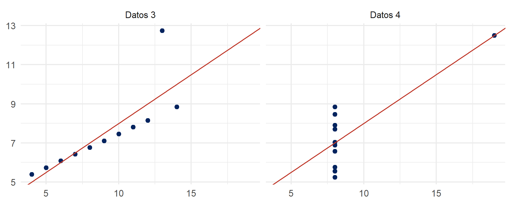
Figure 3
Una observación es influyente si su presencia o ausencia genera un cambio importante en la estimación de los coeficientes de regresión
Outliers y casos influyentes
Que un caso sea un valor extremo (outlier) en una variable no implica necesariamente que sea influyente
La capacidad de influencia de un outlier se asocia al concepto de apalancamiento (leverage): su capacidad de “mover” la recta
No todo outlier es una observación influyente, pero toda observación influyente es un outlier
Distancia de Cook
\[D_{Cook}=\frac{\sum(\hat{y}_{j}-\hat{y}_{j(i)})^2}{p \times MSE}\]
Compara la predicción del modelo con y sin la observación \(i\), ponderada por el número de parámetros (p) y la media cuadrática del error (MSE)
Se usa como punto de corte \(4/(n-k-1)\). Los valores mayores se consideran influyentes
En R:
cooks.distance(modelo)
Distancia de Cook en el Modelo 1
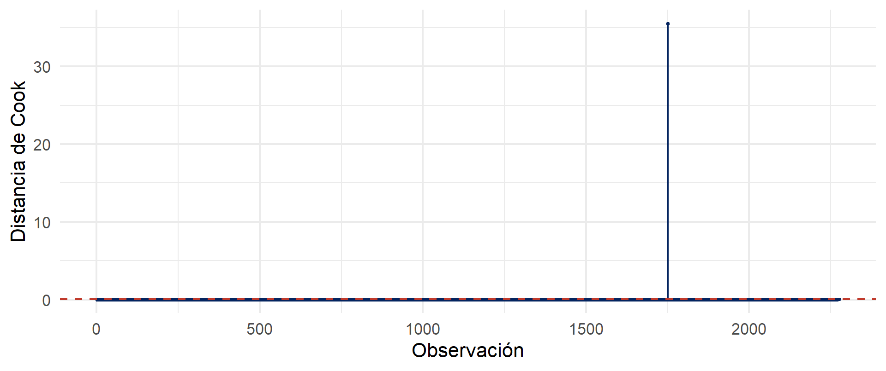
Figure 4
Un caso tiene una distancia de Cook de 35.5. El punto de corte es 0.0018
¿Quién es?
Un hogar de dos personas que declara un ingreso de 4.000 millones de pesos mensuales
Lo más probable es que se trate de un error de registro
Es una buena razón sustantiva para excluirlo
Sin el caso extremo
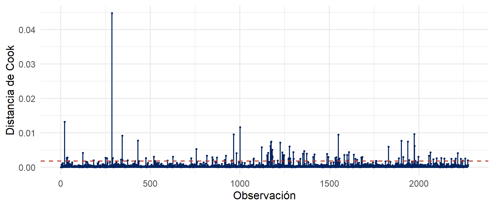
Figure 5
Todavía hay 107 casos sobre el punto de corte. ¿Los eliminamos también?
Antes de decidir: ¿quiénes son?
| N | Participación promedio | % izquierda | |
|---|---|---|---|
| Bajo el corte | 2167 | 1.57 | 18.9 |
| Sobre el corte | 107 | 9.53 | 39.3 |
Los casos sobre el corte son, sobre todo, las personas que más participan
Y el doble de ellos se ubica en la izquierda
No son errores: son justamente el fenómeno que queremos estudiar
Comparación
| M1: todos | M2: sin caso extremo | M3: sin casos sobre el corte | |
|---|---|---|---|
| Predictores | β | β | β |
| (Intercepto) | 2.410 *** | 2.409 *** | 1.965 *** |
| Mujer | -0.076 | -0.072 | 0.068 |
| Edad | -0.032 *** | -0.032 *** | -0.028 *** |
| Educación media | 0.707 *** | 0.705 *** | 0.597 *** |
| Educación superior | 1.752 *** | 1.743 *** | 1.510 *** |
| Ingreso per cápita | 0.000 | 0.002 | -0.007 |
| Centro | 0.098 | 0.097 | 0.213 |
| Izquierda | 0.837 *** | 0.831 *** | 0.462 *** |
| Independiente / ninguna | -0.056 | -0.058 | -0.059 |
| Observations | 2275 | 2274 | 2167 |
| R2 / R2 adjusted | 0.155 / 0.152 | 0.155 / 0.152 | 0.177 / 0.174 |
| * p<0.05 ** p<0.01 *** p<0.001 | |||
El punto de corte sirve para identificar casos que merecen revisión
Excluirlos es una decisión que debe justificarse
Si los casos son válidos: estimar el modelo con y sin ellos, reportar ambos y comentar si las conclusiones cambian
Manejo de casos influyentes
Calcular la distancia de Cook para todas las observaciones
Identificar los casos sobre el punto de corte
Revisar quiénes son: ¿errores de registro o casos válidos?
Reestimar el modelo sin ellos y comparar los resultados
Informar la decisión tomada
2. Linealidad
A revisar
Casos influyentes
Linealidad
Homogeneidad de varianza (homocedasticidad)
Multicolinealidad
Linealidad
Recordando:
- Valores predichos: \(\hat{Y}\)
- Residuos: \(Y-\hat{Y}\)
Una forma de evaluar la linealidad es a través de la distribución de los residuos
En presencia de linealidad se espera que los residuos se distribuyan aleatoriamente en torno a 0 para todos los valores predichos
Residuos y predichos en Anscombe
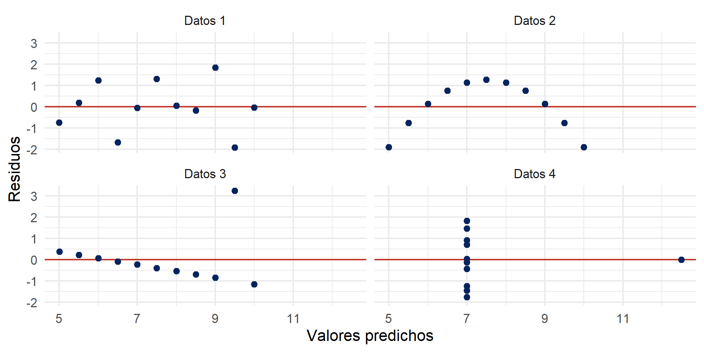
Figure 6
Residuos y predichos en Anscombe
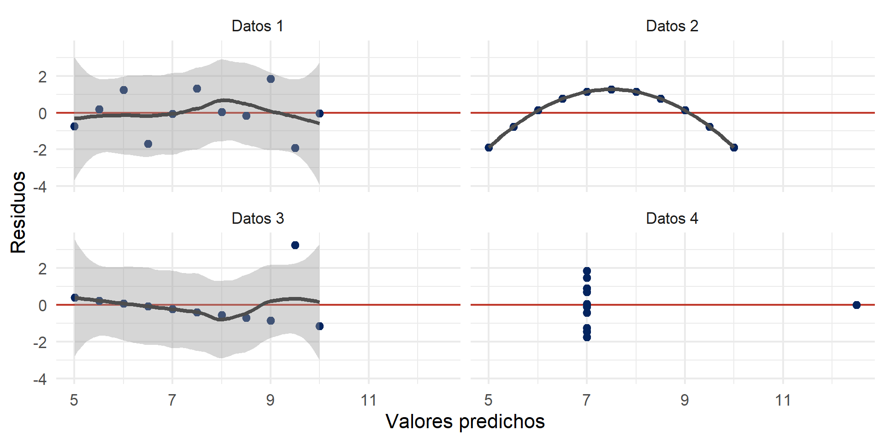
Figure 7
Interpretación del gráfico de diagnóstico
Los residuos deben ser independientes de los valores predichos
Cualquier correlación entre residuos y valores predichos viola este supuesto
Si los residuos muestran un patrón no lineal, como una relación curvilínea, el modelo está especificado incorrectamente
En el ejemplo
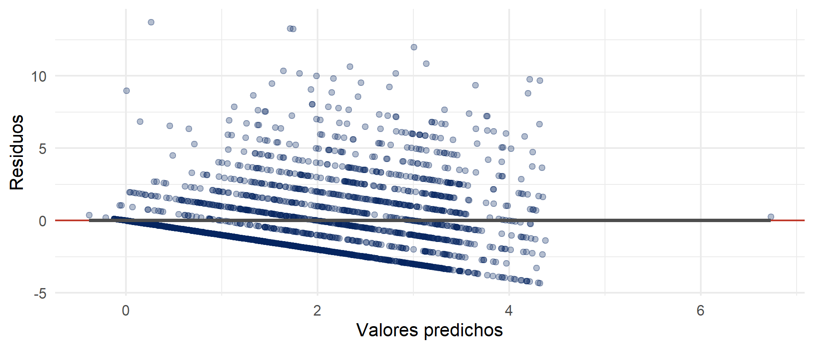
Figure 8
Las líneas diagonales inferiores corresponden a las personas con participación 0: como el índice no puede bajar de 0, su residuo queda determinado por su valor predicho
¿Qué hacer en caso de no linealidad?
Revisar las observaciones influyentes
Transformar las variables:
- Polinomial: para relaciones curvas
- Logarítmica: para variables muy asimétricas
Transformación polinomial
Transformaciones de potencia que permiten capturar asociaciones curvas
Además de la variable original \(x\), se agregan al modelo términos cuadráticos \(x^2\), cúbicos \(x^3\) …
Caso típico: edad
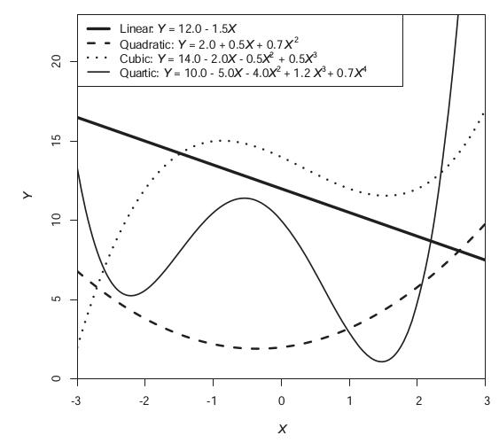
Transformación polinomial
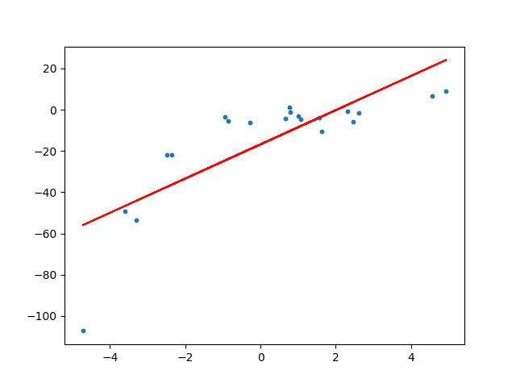
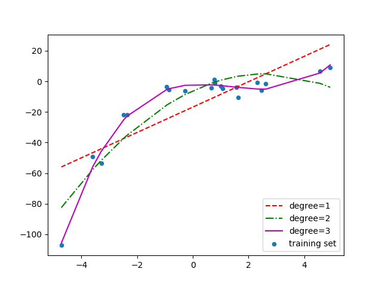
Edad al cuadrado en el ejemplo
proc_data2$edad2 <- proc_data2$edad^2
m4 <- lm(participacion ~ sexo_f + edad + edad2 + educ_f + ing_pc + pospol_f,
data = proc_data2)
summary(m4)$coefficients[c("edad", "edad2"), ]
#> Estimate Std. Error t value Pr(>|t|)
#> edad -3.892899e-02 0.0209657404 -1.8567908 0.06347072
#> edad2 7.337412e-05 0.0002209384 0.3321022 0.73984286El término cuadrático no es significativo: la relación entre edad y participación no presenta una curvatura relevante. No todas las transformaciones mejoran el modelo
Transformación logarítmica
Se utiliza para variables con una distribución muy asimétrica
Comprime las diferencias en la parte alta de la distribución
Se reemplaza la variable original por su logaritmo (a diferencia del polinomio, que se agrega)
Caso típico: ingreso
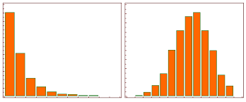
El ingreso en el ejemplo
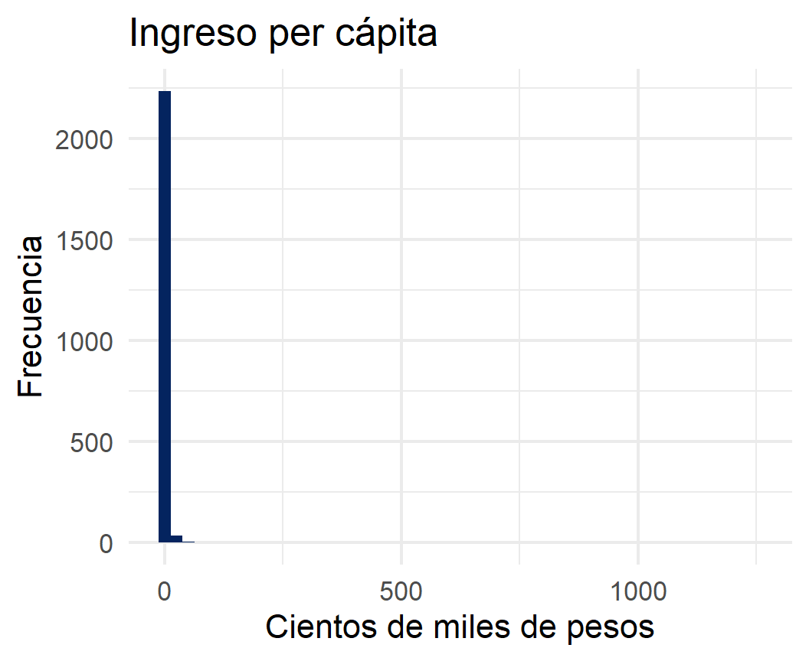
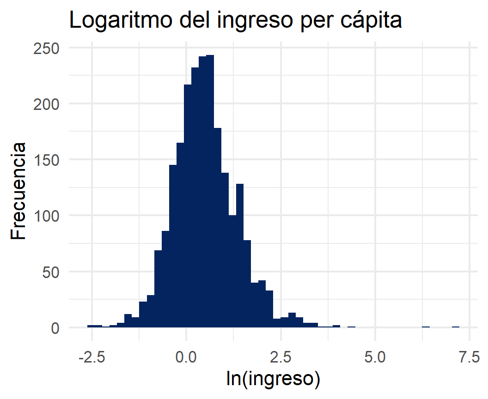
Comparación
| M2: ingreso original | M5: ingreso en logaritmo | |||
|---|---|---|---|---|
| Predictores | β | std. Error | β | std. Error |
| Ingreso per cápita | 0.002 | 0.002 | ||
| Ingreso per cápita (logaritmo) | 0.245 *** | 0.066 | ||
| Observations | 2274 | 2274 | ||
| R2 / R2 adjusted | 0.155 / 0.152 | 0.159 / 0.157 | ||
| * p<0.05 ** p<0.01 *** p<0.001 | ||||
Ambos modelos controlan por sexo, edad, nivel educacional y posición política
Interpretación de un predictor en logaritmo
En su forma original, el ingreso no era significativo. En logaritmo, el efecto es positivo y significativo
El coeficiente dividido por 100 indica el cambio en \(y\) asociado a un aumento de 1% en \(x\): un aumento de 1% en el ingreso se asocia con 0.00245 puntos más en el índice de participación
Una lectura más intuitiva: duplicar el ingreso se asocia con \(0.245 \times ln(2) = 0.17\) puntos más, manteniendo constantes las demás variables
3. Homocedasticidad
A revisar
Casos influyentes
Linealidad
Homogeneidad de varianza (homocedasticidad)
Multicolinealidad
Homogeneidad de varianza
Supuesto de que la varianza de los residuos es homogénea a lo largo de los valores predichos
Los problemas de homocedasticidad (heterocedasticidad) afectan la estimación de los errores estándar, y por lo tanto la significación de los coeficientes
Homogeneidad de varianza
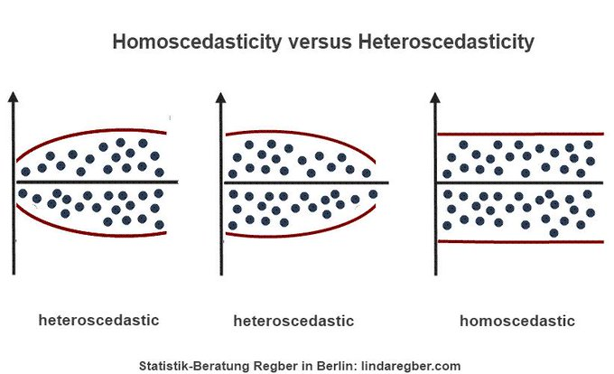
En el ejemplo
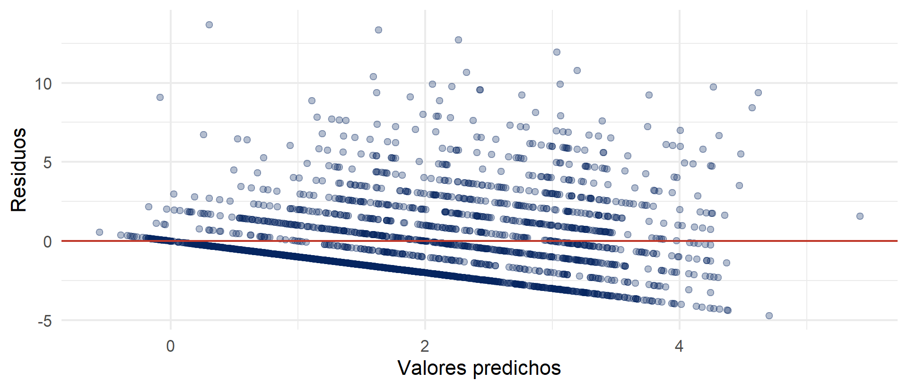
Figure 11
La dispersión de los residuos aumenta a medida que crecen los valores predichos: tiene forma de embudo
Detección de heterocedasticidad
Test de Breusch-Pagan, en R:
lmtest::bptest(modelo)Hipótesis nula: la varianza de los residuos es constante
Hipótesis alternativa: la varianza no es constante
A diferencia de los contrastes que hemos visto en el curso, aquí lo deseable es no rechazar la hipótesis nula (\(p>0.05\))
En el ejemplo
Se rechaza la hipótesis nula: hay heterocedasticidad
Corrección: errores estándar robustos
- Se estima el modelo con errores estándar robustos a la heterocedasticidad. Los coeficientes no cambian; cambian sus errores estándar
- Luego, se comparan ambos modelos
Comparación
| Coeficiente | EE original | EE robusto | p original | p robusto | |
|---|---|---|---|---|---|
| (Intercept) | 2.432 | 0.276 | 0.275 | 0.000 | 0.000 |
| sexo_fMujer | -0.004 | 0.106 | 0.109 | 0.969 | 0.970 |
| edad | -0.034 | 0.004 | 0.004 | 0.000 | 0.000 |
| educ_fEducación media | 0.625 | 0.139 | 0.113 | 0.000 | 0.000 |
| educ_fEducación superior | 1.514 | 0.164 | 0.155 | 0.000 | 0.000 |
| ln_ing | 0.245 | 0.066 | 0.070 | 0.000 | 0.001 |
| pospol_fCentro | 0.101 | 0.173 | 0.157 | 0.559 | 0.521 |
| pospol_fIzquierda | 0.842 | 0.177 | 0.187 | 0.000 | 0.000 |
| pospol_fIndependiente / ninguna | -0.039 | 0.158 | 0.147 | 0.806 | 0.792 |
Los errores estándar cambian levemente, pero ningún coeficiente cambia su significación: los resultados son robustos a la heterocedasticidad
4. Multicolinealidad
A revisar
Casos influyentes
Linealidad
Homogeneidad de varianza (homocedasticidad)
Multicolinealidad
Multicolinealidad
Un supuesto de los modelos de regresión es que los predictores no están altamente correlacionados entre sí
En casos de alta correlación se produce una inflación de los errores estándar, lo que disminuye los valores \(t\) y dificulta el rechazo de la hipótesis nula
Recordemos la parcialización: si dos predictores comparten casi toda su varianza, queda muy poca varianza propia para estimar el efecto de cada uno
Detección: VIF
\[VIF=\frac{1}{1-R^{2}_x}\]
VIF (Variance Inflation Factor): se calcula a partir de un modelo donde \(x\) es la dependiente y los demás predictores son las independientes
Mientras mayor el \(R^2_x\), más pequeño el denominador y mayor el VIF
Si \(VIF=1\), entonces \(R^{2}_x=0\): la variable es independiente de los demás predictores
Si \(VIF=10\), entonces \(R^{2}_x=0.9\): el 90% de la varianza de la variable se explica por los demás predictores
Estimación del VIF
Valores mayores a 2.5 pueden indicar alta multicolinealidad
Con predictores categóricos,
vifentrega el GVIF. Para comparar con el punto de corte se usa la última columna al cuadrado
¿Y con la edad al cuadrado?
La edad y su cuadrado tienen VIF muy altos, porque una variable y su cuadrado están casi perfectamente correlacionados. Esta multicolinealidad se produce por construcción y no es preocupante: los términos polinomiales se interpretan en conjunto
Cierre
Resumen
| Supuesto | Cómo se revisa | Qué hacer si no se cumple |
|---|---|---|
| Casos influyentes | Distancia de Cook | Revisar los casos; excluir solo con justificación y comparar modelos |
| Linealidad | Gráfico de residuos y predichos | Transformaciones polinomiales o logarítmicas |
| Homocedasticidad | Gráfico de residuos; test de Breusch-Pagan | Errores estándar robustos |
| Multicolinealidad | VIF | Revisar predictores redundantes |
Recomendaciones generales
Buenos descriptivos univariados y bivariados: muchos problemas se anticipan ahí, como el ingreso de 4.000 millones o la concentración en 0
Los diagnósticos no reemplazan la teoría: una transformación o una exclusión de casos debe tener sentido sustantivo
Informar los procedimientos y las decisiones tomadas
Para el trabajo final
El informe debe incluir una sección de diagnóstico del modelo final, que reporte al menos:
La revisión de casos influyentes y la decisión tomada respecto de ellos
El gráfico de residuos y valores predichos
El test de Breusch-Pagan y, si corresponde, la comparación con errores estándar robustos
Los valores del VIF
Más que aplicar todas las correcciones, lo importante es informar qué se revisó, qué se encontró y qué se decidió
Métodos estadísticos para Ciencias Sociales III
Kevin Carrasco
Sociología - UNAB
2do Sem 2026
https://metod3-unab.netlify.app/